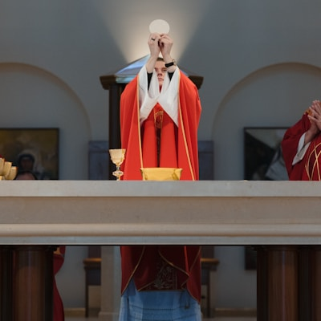
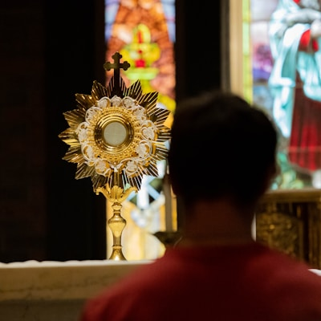
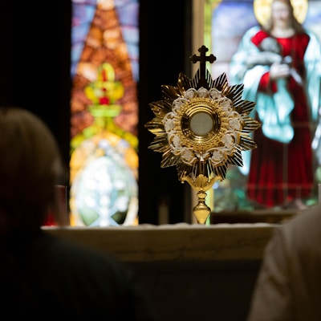
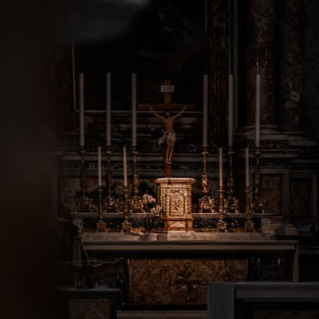

Pe. José Gomes
Pároco da Paroquia

Vice-Pároco
padre auxiliar da paróquia

Coordenador(a) de Catequese
responsável pela formação cristã

Coordenador(a) da Pastoral Jovem
pastoral da juventude

Coordenador(a) da Pastoral Social
obras sociais e caridade

Coordenador(a) da Pastoral da Saúde
visitas e assistência espiritual

Ministro(a) da Eucaristia
distribuição da sagrada comunhão

Regente do Coro Paroquial
canto e música litúrgica